O projektu
Nové softwarové řešení pro tvorbu virtuálních výstav je součástí komplexního projektu INDIHU, jehož hlavním cílem je vytvořit softwarové nástroje a infrastrukturu pro vědeckou práci v humanitních oborech, jejímž základem nebudou dle stávajících zvyklostí analogové dokumenty, nýbrž zdroje dostupné v elektronické podobě – například digitalizované dokumenty, elektronické databáze či různé separátní kolekce elektronických dat vědecké povahy, jež vznikají na akademických pracovištích a které dosud nejsou používány v uspokojivém množství, nemluvě o absenci jejich systematického propojení.
Cíl projektu je plně v souladu s novými přístupy pro vědeckou práci v oblasti humanitních věd, které lze charakterizovat termínem „Digital Humanities“.
Systém bude využitý k prezentaci kulturního dědictví odborné i laické veřejnosti. Pro paměťové a výzkumné instituce bude sloužit jako základní open-source nástroj pro vytvoření virtuální výstavy, která bude publikovatelná v prostředí internetu nebo uzavřené lokální počítačové sítě.
Systém bude dále využit k didaktickým účelům, kdy studenti budou mít možnost sestavovat takovéto výstavy v rámci výuky. Systém poskytne kurátorům a autorům virtuálních výstav širokou škálu nástrojů pro vytvoření vizuálně i obsahově hodnotné virtuální výstavy, včetně:
- Strukturování výstavy do kapitol
- Vložení obrázků a videí
- Animování obrázků, vytváření sekvencí
- Popisování obrázků body zájmu
- Vložení hudby a mluveného komentáře
- Zakomponování miniher vyžadujících interakci uživatele hravou formou
- Vkládání videí z YouTube, výseků map z Google Maps a integrace s dalšími externími službami
- Detailního popsání jednotlivých obrazovek
- Evidence použitých zdrojů a bibliografie
Hotovou virtuální výstavu je možné přehrávat přímo v uživatelské části systému, která umožňuje tři módy prohlížení – prezentační mód, v kterém jsou jednotlivé obrazovky výstavy přepínány automaticky (má téměř povahu dokumentárního filmu), textový mód, který má textovou podobu a je řízený uživatelem, a interaktivní (klikací) mód, který je kombinací výše zmíněných dvou a umožňuje uživateli manuální pohyb mezi stránkami, avšak jednotlivé stránky se přehrávají v plné podobě včetně animací a zvuku.
Virtuální výstavy vytvořené v systému je možné jednoduše zveřejnit na vlastní URL adrese a zpřístupnit je například prostřednictvím sociálních sítí, webových stránek instituce, nebo i na interaktivních či statických projekčních zařízeních a obrazovkách v prezentačním módu s nebo bez umožnění interakce uživatelů.
Slovník pojmů
Výstava
Výstava, nebo virtuální výstava, je základním konceptem systému. Jedná se o ucelenou prezentaci určitého tématu, vytvořenou s použitím textových, audiovizuálních informací a interakce prostřednictvím systému.
Výstava vždy obsahuje úvodní stránku výstavy, která nese základní informace o celé výstavě, jako jsou:
- Název výstavy
- Podtitul výstavy
- Perex výstavy
- Titulní obrázek kapitoly, který může být animovaný
- Seznam kapitol – generuje se automaticky systémem
- Seznam rolí výstavy
- Seznam zdrojových a doplňujících dokumentů/odkazů k výstavě
Výstava vždy obsahuje alespoň jednu kapitolu.
Autor
Autor virtuální výstavy je uživatel systému, který vytváří či vytvořil danou virtuální výstavu. Jedna výstava může mít jednoho či více autorů.
Uživatel
Uživatel je osoba, pro kterou existuje v systému uživatelský účet. Dokáže se tedy přihlásit do systému pomocí přihlašovacích údajů.
Uživatelský účet v systému vzniká registrací uživatele, případně je přebírán z externího systému pro správu identit.
Uživatelská role
Uživatelská role opravňuje všechny uživatele, kteří jsou nositelem této role, k výkonu určité agendy v rámci systému. Např. uživatelé v roli Administrátora mohou konfigurovat systém či schvalovat žádosti o registraci do systému. Výchozí role jsou Administrátor a Editor.
Kapitola
Kapitola je stavební jednotka výstavy, která v sobě obsahuje jednotlivé stránky výstavy. Výstava může obsahovat jednu či více kapitol.
Kapitola vždy obsahuje úvodní stránku kapitoly s názvem kapitoly a titulním obrázkem kapitoly, který může být animovaný.
Kapitola musí obsahovat alespoň jednu stránku.
Stránka
Stránka je nejmenší stavební jednotkou výstavy. Představuje textový a audiovizuální obsah zobrazený v jednom okamžiku na obrazovce uživatele. Aby bylo zamezeno neomezené volnosti při umísťování audiovizuálních objektů na stránku, systém definuje omezený počet typů stránek, z nichž každý definuje omezující podmínky na to, co všechno lze na danou stránku umístit. Typy stránek jsou:
- Stránka s obrázkem
- Stránka s videem
- Stránka Parallax
- Stránka Zoom in
- Stránka se sekvencí obrázků
- Stránka Před a po
- Stránka s externím objektem
- Stránka s minihrou
Jednotlivé typy stránek jsou podrobněji popsány v poslední části Manuálu. Jediným povinným atributem stránky, který musí uživatel vždy vyplnit, je název stránky. Ostatní atributy potřebné pro přehrání výstavy jsou doplňovány systémem automaticky (a mohou být uživatelem změněny). Každá stránka bude obsahovat zaškrtávací pole Stránka je dokončená“ indikující, že daná stránka je připravená ke zveřejnění. Takto označené stránky budou i barevně odlišeny v editoru struktury výstavy.
Soubor
Soubor může být elektronický dokument, obrázek, video, hudební soubor či jiný soubor nahraný do systému z lokálního úložiště některého z autorů výstavy. Soubor se vždy váže ke konkrétní výstavě a nezobrazuje se v seznamu souborů u jiných výstav. Tyto soubory pro danou výstavu lze následně používat při tvorbě kapitol a stránek výstavy.
Hudba kapitoly
Hudba kapitoly je hudební soubor, který byl přiřazen určité kapitole při vytváření výstavy. Tento hudební soubor je přehráván v nekonečné smyčce v průběhu prohlížení libovolné stránky dané kapitoly. Jedná se typicky o podkladovou tematickou hudbu provázející uživatele celou kapitolou. Na každé stránce bude možnost tuto hudební stopu ztlumit.
Hudba stránky
Hudba stránky je hudební soubor, který byl přiřazen určité stránce při vytváření výstavy. Tento hudební soubor je přehrán jednou vždy při zobrazení dané stránky. Jedná se typicky o mluvený komentář k obsahu stránky.
Obrázek stránky
Obrázek stránky je obrazový soubor, který byl přiřazen určité stránce při vytváření výstavy. Tento obrazový soubor je zobrazen v rámci zobrazení dané stránky na základě autorem definovaných parametrů. Obrázek může obsahovat animaci a jeden nebo více bodů zájmu s vysvětlivkou, tzv. infopointů.
Video stránky
Video stránky je videosoubor, který byl přiřazen určité stránce při vytváření výstavy. Tento videosoubor je přehrán jednou vždy při zobrazení dané stránky.
Dokument stránky
Zdroj stránky je soubor, který byl přiřazen určité stránce při vytváření výstavy. Tento soubor je uveden mezi zdroji použitými při tvorbě dané stránky a je možné si jej stáhnout.
Infopoint obrázku
Infopoint obrázku je bod zájmu na obrázku, tedy bod na obrázku, ke kterému chce autor poskytnout doplňující informace. Je reprezentován ikonou otazníčku a po kliknutí na něj se zobrazí okno s doplňující informací. Obrázek může obsahovat žádný, jeden, nebo více infopointů.
Animace obrázku
Aminace obrázku je efekt, který se aplikuje na obrázek při jeho zobrazení v rámci stránky. Obrázek může obsahovat jednu z následujících animací – pohyb doprava, pohyb doleva, pohyb nahoru, pohyb dolů, přiblížení, oddálení. Animace obrázku může být definována autorem v rámci vytváření výstavy.
Interakce stránky
Interakce stránky umožňuje osobě prohlížející si výstavu interagovat s výstavou. Interakce může spočívat např. ve výběru jedné z více možností či přesunutí objektu na stránce metodou drag&drop. Interakce budou využity v rámci tzv. miniher, tedy stránek vyžadujících interakci uživatele hravou formou.
Notifikace
Notifikace je systémové oznámení o určité události. Je vždy adresována jednomu uživateli, avšak jedna událost může vést k vzniku více notifikací pro různé uživatele systému.
ExpoEditor
Na mnoha místech jsou u ovládacích prvků a polí použity malé ikonky otazníků - po kliknutí na ně bude editorovi zobrazena kontextová nápověda, která mu ulehčí pochopení funkcionalit ExpoEditoru a zrychlí jeho práci na přípravě výstavy.
U kterékoliv stránky lze kliknutím na tlačítko Náhled otevřít rozpracovanou výstavu v ExpoVieweru na dané stránce a prohlédnout si její aktuální podobu. Pro tento účel bude ExpoViewer kontrolovat stav výstavy a pokud není prohlížená výstava ve stavu Zveřejněná, kontroluje ExpoViewer autentizaci a autorizaci uživatele pro danou výstavu před jejím zobrazením.
Registrace
Pokud chce osoba získat přístup do aplikace ExpoEditor, musí vyplnit registrační formulář a potvrdit registraci klinutím na odkaz, který je jí doručen na zadanou emailovou adresu. Na základě tohoto potvrzení vznikne žádost o vytvoření účtu. Žádost podléhá schválení administrátorem systému, pokud není zapnutá volba automatického schvalování žádostí. Po schválení žádosti administrátorem vzniká uživatelský účet s rolí Editor.
O odeslání žádosti ke schválení i o následném schválení a vytvoření uživatelského účtu je žadatel informován mailovými notifikacemi.
Přihlášení
Uživatel se přihlašuje uživatelským jménem (e-mail) a heslem, které si zvolil při registraci, anebo které mu bylo přiděleno v rámci instituce.
Správa uživatelského účtu
Přihlášený uživatel v pravé části hlavičky aplikace ExpoEditor klikne na ikonku uživatele. Zobrazí se rozbalovací menu a jednou z možností je Správa účtu. Zde má uživatel možnost zadat či upravit svoje osobní údaje a změnit přihlašovací heslo. Má zde také možnost zrušit svůj účet.
Administrační rozhraní
Uživatel s rolí Administrátor má v pravé části hlavičky aplikace k dispozici záložku Administrace. Po kliknutí se mu zobrazí rozbalovací menu s možnostmi Nastavení pro nastavení systému a Uživatelé pro správu uživatelů a schvalování žádostí o vytvoření účtu.
Nastavení systému
Zde má administrátor možnost měnit některá systémová nastavení:
- Zapnutí/vypnutí automatického schvalování žádostí o vytvoření uživatelského účtu
Schvalování žádostí o vytvoření uživatelského účtu
Administrátor vidí seznam všech uživatelů v systému v přehledné tabulce s možností vyhledávání a filtrování. U každého uživatele mu systém nabízí akce s uživatelem, jako je schválení žádosti o vytvoření účtu či zablokování účtu.
Seznam virtuálních výstav
Po přihlášení se uživateli zobrazí seznam výstav, které vytváří či vytvořil. U každé výstavy vidí základní informace, jako jsou název výstavy, vlastník výstavy, stav výstavy a datum poslední změny. Uživatel může vyhledávat v seznamu výstav podle názvu. V pravé části vidí seznam naposledy otevřených výstav s možností rychle se k některé z výstav vrátit. Uživatel má také možnost vytvořit novou výstavu kliknutím na tlačítko.
U každé výstavy lze otevřít kontextové menu s možností základních operací, jako je přejmenování výstavy, sdílení výstavy či její části, export výstavy, změna stavu výstavy, zkopírování výstavy či smazání výstavy.
Každá výstava je v jednom z těchto stavů:
- V přípravě (výstava není zveřejněná a její náhled je dostupný pouze registrovaným uživatelům, kteří k ní mají přístup)
- veřejněná (výstava je veřejně dostupná na URL adrese bez omezení)
- Ukončená (výstava již není veřejně dostupná a nedá se editovat)
Systém umožňuje pozvat další editory v systému k spolupráci na výstavě podobně, jako je tomu u Google dokumentů – zadáním uživatelského jména a výběrem uživatelů. Uživatelům je o této skutečnosti odeslaná mailová notifikace.
Výstavu je dále možné sdílet odesláním URL adresy výstavy, a to jak odkazu na titulní stránku, tak na libovolnou kapitolu či stránku. Pořád ale platí pravidla pro zveřejnění výstavy, tedy pokud výstava není ve stavu Zveřejněná, anonymní uživatel ani uživatelé, kteří na ní nespolupracují, ji neuvidí.
Administrátor systému vidí v seznamu všechny výstavy všech uživatelů a může s nimi vykonávat všechny operace tak, jakoby by měl na všech výstavách oprávnění pro čtení i zápis. Nemůže výstavy mazat.
Detail výstavy
Po otevření detailu výstavy se uživateli zobrazí první záložka - Struktura výstavy - která slouží pro definování členění výstavy na kapitoly a stránky. Lze se přepnout na záložky Soubory pro správu souborů relevantních k výstavě, Nastavení pro obecná nastavení celé výstavy a Sdílení.
Všechny změny, které uživatel na detailu výstavy udělá, jsou okamžitě ukládány, není zde žádné tlačítko Uložit.
Struktura výstavy
Každá výstava obsahuje dvě povinné části, a to Úvod výstavy a Závěr výstavy. Mezi nimi je výstava strukturována do kapitol. Každá kapitola obsahuje povinně úvodní stránku kapitoly a pak další stránky s obsahem.
Struktura výstavy je uživateli zobrazená v grafické podobě v editoru, který nabízí interaktivní možnosti správy struktury, tedy přidávat nové části výstavy na jednotlivá místa, přesouvat stránky a kapitoly či mazat části výstavy.
Každá stránka dále obsahuje kontextové menu, které umožňuje mimo jiné zobrazit náhled dané stránky výstavy ve Vieweru nebo možnost Upravit, která otevře detail stránky k editaci.
Soubory výstavy
Každá výstava disponuje svým vlastním souborovým depozitářem, do kterého si uživatel může nahrávat soubory potřebné pro tvorbu výstavy. Uživatel také může vytvářet adresářové struktury a přesouvat soubory mezi složkami. K dispozici je náhled obrázku a metadat souboru. Tyto soubory pak uživatel dále využívá při vytváření a editaci jednotlivých stránek, proto je potřebné zabezpečit co nejvyšší přehlednost dokumentového repozitáře výstavy.
Nastavení
Záložka obsahuje veškerá nastavení virtuální výstavy, která se netýkají konkrétní stránky výstavy. Zatím sem řadíme pouze nastavení stavu a URL výstavy, další mohou vyplynout v průběhu implementace.
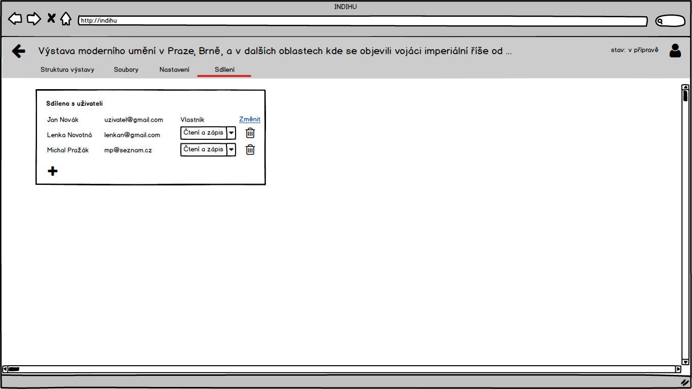

Sdílení
Výstavu lze sdílet s dalšími editory, kterým lze umožnit pouze prohlížení výstavy nebo i editaci. Přidání další osoby probíhá stejně jako u Seznamu virtuálních výstav.
Zamykání výstavy
Pokud některý z uživatelů otevře detail výstavy k editaci, zamkne tuto výstavu pro editaci ostatními uživateli na konfiguračně definovanou dobu (standardně 1 minuta). Informace o tom, který uživatel právě výstavu upravuje, bude viditelná jak v seznamu výstav, tak na detailu výstavy. Ostatní uživatelé mohou detail výstavy prohlížet, avšak ne upravovat.
Úvodní stránka výstavy
Úvodní stránka výstavy obsahuje obrázek s případnou animací, název výstavy, informace o použitých zdrojích, informace o osobách podílejících se na přípravě výstavy a odkazy související dokumenty ke stažení. Editor se na tuto stránku dostane ze struktury výstavy kliknutím na čtvereček úvodu výstavy nebo výběrem z kontextového menu tohoto čtverečku.
Příprava dat
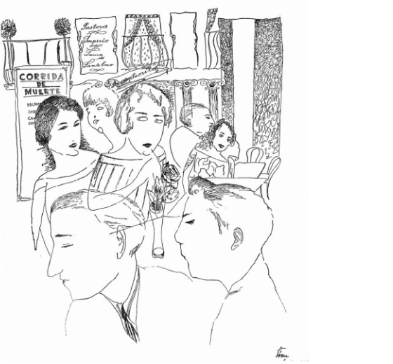
Obrázky připravujte v rozlišení minimálně full HD (1920×1080) s rozlišením 72 dpi a ve formátu .png nebo .jpg.
Práce v editoru
Základní info o výstavě
Na hlavní záložce editor vyplňuje základní údaje k výstavě, vybírá obrázek výstavy ze seznamu dokumentů, volí animaci obrázku. Editor může vybrat ze seznamu dokumentů audiosoubor představující audioverzi celé výstavy - tato je pak dostupná uživatelům ke stažení na úvodní stránce výstavy.
Autoři a spolupracovníci
Na této záložce editor přidává osoby podílející se na přípravě výstavy. Vždy volí oprávnění (pro čtení a zápis, pouze pro čtení), a osobu. Výběr osoby probíhá zadáním e-mailové adresy. Pokud zadaná e-mailová adresa v systému neexistuje, je odeslána pozvánka e-mailem. Uživatel, který výstavu vytvořil, má oprávnění Vlastník výstavy. V rámci editace oprávnění spolupracovníků může označit jiného uživatele jako vlastníka a on sám vlastnictví výstavy tímto ztratí a získá oprávnění pro čtení i zápis.
Dokumenty a zdroje
Zde editor výstavy tvoří seznam zdrojů a relevantních dokumentů. Zde je možné vybrat dokument z knihovny dokumentů výstavy nebo vložit URL adresu dokumentu dostupného online. Editor doplní název dokumentu a typ dokumentu, nebyly-li tyto informace rozpoznány či doplněny automaticky, například převzetím z knihovny dokumentů. Tyto dokumenty jsou následně dostupné ke stažení na úvodní stránce výstavy.
Úvodní stránka kapitoly
Každá nová kapitola je otevřena stránkou jako je tato, jedná se titulní stránku. Obsahuje název kapitoly a titulní obrázek kapitoly, jež může být i animovaný.
Příprava dat
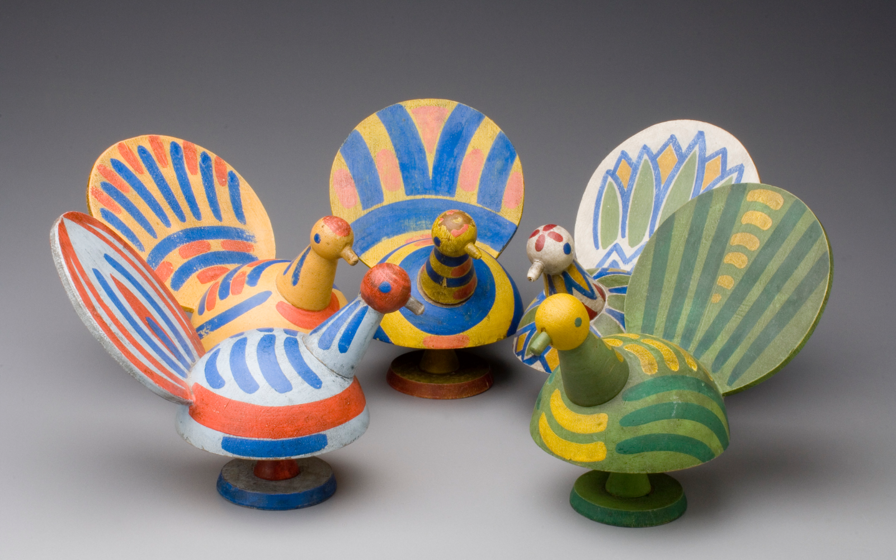
Obrázky připravujte v rozlišení minimálně full HD (1920×1080) s rozlišením 72 dpi a ve formátu .png nebo .jpg.
TIP: Obrázky ve formátu .png a .jpg je možné zmenšit až o 80% velikosti na adrese https://tinypng.com
Práce v editoru
- Na hlavní záložce editor vyplňuje základní údaje ke kapitole – název a podnázev. Výběrem z knihovny dokumentů lze vybrat dvě zvukové stopy – pro celou kapitolu a pro úvodní stránku kapitoly. Zvuková stopa pro celou kapitolu je přehrávána ve smyčce počas průchodu všemi stránkami kapitoly. Zvuková stopa pro úvodní stránku kapitoly je přehrána pouze jednou a definuje svou délkou i délku animace obrázku a celkově délku setrvání na této stránce při prohlížení v prezentačním módu. Tuto délku v sekundách lze manuálně změnit, pokud editorovi automaticky vypočtená délka nevyhovuje.
- Na záložce Obrázek vybírá editor obrázek z knihovny dokumentů. K němu vybírá animaci ze seznamu dostupných animací. V tabulce s infopointy může přidat nový infopoint – bod zájmu – a umístit ho na obrázek ve formě ikonky otazníčku. V tabulce pak k tomuto bodu zájmu vyplní textový popis. Při přehrávání výstavy se pak tyto infopointy na obrázku zobrazí a po kliknutí na otazníček se zobrazí průvodný text.
Nápady na využití modulu
Fotografie doplňující mluvené slovo
Divák si prohlíží fotografii vztahující se k mluvenému slovu, jenž je současně přehráváno.
Fotografie doplňující mluvené slovo s infopointy
Divák si prohlíží fotografii vztahující se k mluvenému slovu, jenž je současně přehráváno a je zároveň upozorněn na detaily pomocí infopointů.
Video
Jedná se o stránku, která obsahuje pouze videosoubor, který určuje svou délkou délku přehrávání stránky.
Příprava dat
Video připravujte v rozlišení FullHD (1920×1080), 25 snímků za vteřinu, v rendrovacím formátu H.264
TIP: Velikost videa lze výrazně zmenšit, při zachování ucházející kvality v programu HandBrake https://handbrake.fr
Práce v editoru
Na hlavní záložce editor vyplňuje stejné údaje jako u předchozí stránky s tím rozdílem, že nevybírá z knihovny dokumentů zvukovou stopu, nýbrž videosoubor, který určuje svou délkou délku přehrávání stránky.
Nápady na využití modulu
Prolistování knihou
Videosoubor s prolistováním knihou je zde použit jako zábavný doplněk mluveného slova (úryvku z knihy).
Mluvící hlava
Videosoubor s názorem oborníka na danné téma.
Animace
Animace je velmi poutavá forma videosouboru. Perfektně se hodí pro rozhýbání infografik, psaných textů apod.
Paralaxa
Tato technika se nazývá parallax a imituje prostorový pohyb obrazu, čímž vyvolává 3D dojem.
Příprava dat

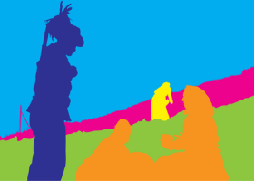
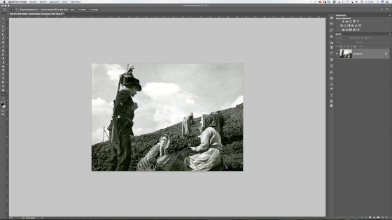
- Nejprve je nutné vybrat vhodnou fotografii, která by se dala rozdělit do minimálně dvou perspetivních plánů. Ne všechny fotografie jsou pro parallax vhodné.
- Při přípravě dat pro parallax je nutné rozřezat fotografii do dvou a více vrstev. Je nutné postupovat podle logiky perspektivy - to, co je na fotografii blíže oddělit od toho, co je na fotografii dále. Po rozřezání je nutné uměle doretušovat všem určitý překryv, neboť při animaci se jednotlivé vrstvy vůči sobě posouvají. Při tvorbě překryvu je nutné brát v potaz to, kterým směrem se vrstvy budou vůči sobě animovat.
Obrázky připravujte v rozlišení minimálně full HD (1920x1080) s rozlišením 72 dpi a ve formátu .png nebo .jpg.
TIP: Obrázky ve formátu .png a .jpg je možné zmenšit až o 80% velikosti na adrese https://tinypng.com
Práce v editoru
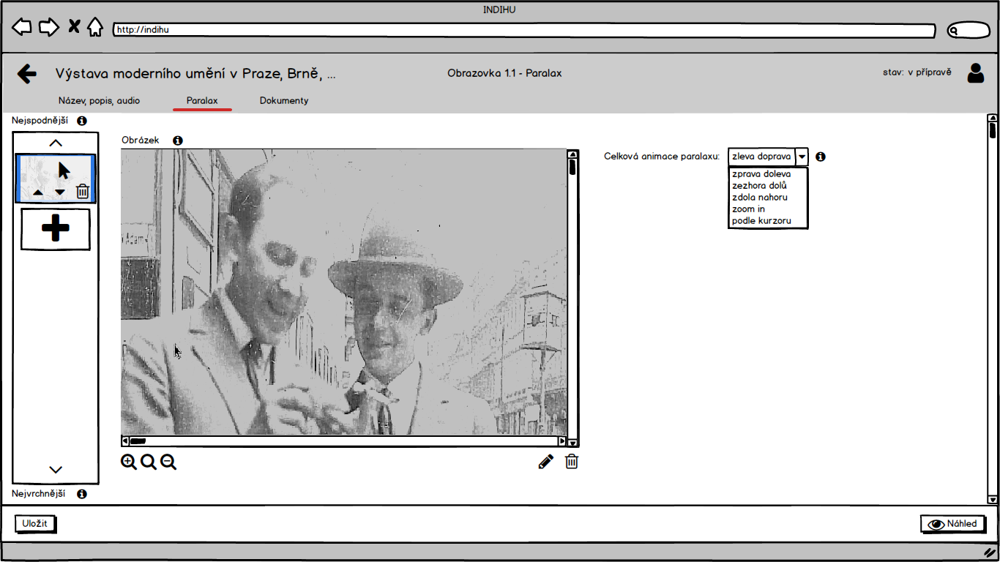
Údaje na hlavní záložce jsou stejné jako s obrázkem. Na záložce Parallax může editor vybrat z knihovny dokumentů 2 a více obrázků, které v sznamu obrázků na levé straně seřadí od nejvrchnější po nejspodnější vrstvu. Editor dále zvolí typ animace společný pro všechyn vrstvy ze seznamu povolených animací. Při přehrávání této stránky v rámci výstavy jsou všechyn obrázkové vrstvy animovány zvolenou animací a to tak, že nejspodnější vrstva je animována nejpomaleji a animace jednotlivých vrstev pevně definovaným koeficientem zrychluje až k nejvrchnější vrstvě. Tato technika se nazývá paralax a imituje prostorový pohyb obrazu, čímž vyvolává 3D dojem.
Zoom in
Tato technika umožňuje ukázat divákovi objekt vcelku a poté upozornit na důležité detaily, jež jsou popsány pomocí infopointů.
Příprava dat
Obrázky připravujte v rozlišení minimálně full HD (1920x1080) s rozlišením 72 dpi a ve formátu .png nebo .jpg.
TIP: Obrázky ve formátu .png a .jpg je možné zmenšit až o 80% velikosti na adrese https://tinypng.com
Práce v editoru
Údaje na hlavní záložce jsou stejné jako u Stránky s obrázkem. Na záložce Sekvence vybírá editor obrázek z knihovny dokumentů. V tabulce se sekvencí zoomů může přidat nový bod pro zoom a umístit ho na obrázek. V tabulce pak k tomuto bodu zájmu vybere úroveň zoomu a délku trvání animace. Součet trvání všech zoomů musí být menší nebo rovný celkové délce přehrávání stránky definované délkou zvukové stopy nebo ručně v sekundách. Pokud součet překročí tento limit, je na tuto skutečnost editor upozorněn a délky zoomů se automaticky upraví tak, aby tato podmínka byla dodržená.
Nápady na využití modulu
Detaily uměleckého díla
Tato stránka umožňuje divákovi prohlédnout si celé umělecké dílo vcelku a poté upozorní na důležité detaily, jež mouhou být popsány pomocí infopointů.
Lokace v krajině
Tato stránka umožňuje divákovi prohlédnout si celou lokaci a poté upozorní na důležité detaily, jež mohou být popsány pomocí infopointů.
Část dokumentu
Tato stránka umožňuje divákovi prohlédnout si celý dokument a poté upozorní na důležité detaily, jež mohou být popsány pomocí infopointů.
Sekvence obrázků
Tento modul funguje vlastně jako sekvenční animace mnoha fotografií za sebou. Umožňuje ukázat divákovi objekt ze všech stran a upozornit na důležité detaily.
Při přípravě dat k modulu lze postupovat dvěma způsoby: Je možné objekt nafotit nebo je možné vytvořit animaci ve 3D programu.
Varianty modulu
Varianta focení objektu
Exponovaný objekt je možné nafotit pokud je dostupný ve fyzické podobě.
Varianta užití 3D programu
Sekvenci snímků lze také vytvořit ve 3D programu.
Příprava dat
Varianta focení objektu
Je možné objekt nafotit - a to alespoň 36 fotografiemi ze všech stran. Čím více bude fotografií, tím jemnější bude pohyb animace.
Je dobré vždy najít idální poměr mezi co jejmenším datovým objemem a zároveň co jevětší plynulostí animace. Snímků tedy nesmí být příliš mnoho ani příliš málo.
TIP: Obrázky ve formátu .png a .jpg je možné zmenšit až o 80% velikosti na adrese https://tinypng.com
Varianta užití 3D programu
Je možné vytvořit animaci ve 3D programu a vyrenderovat ji jako JPG (PNG) sekvenci.
Je dobré vždy najít idální poměr mezi co jejmenším datovým objemem a zároveň co jevětší plynulostí animace. Snímků tedy nesmí být příliš mnoho ani příliš málo.
Obrázky připravujte v rozlišení minimálně full HD (1920x1080) s rozlišením 72 dpi a ve formátu .png neob .jpg.
TIP: Obrázky ve formátu .png a .jpg je možné zmenšit až o 80% velikosti na adrese https://tinypng.com
Práce v editoru
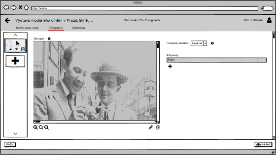
Údaje na hlavní záložce jsou stejné jako u Stránky s obrázkem. Na záložce Sekvence může editor vybrat z knihovny dokumentů 2 a více obrázků, které v seznamu obrázků na levé straně seřadí od prvního po poslední. Editor dále zvolí typ přechodové animace společný pro všechny obrázky ze seznamu povolených přechodových animací. Po kliknutí na některý z obrázků v levém seznamu se zobrazí jeho detail, na kterém je možné defiovat infopointy stejným způsobem jako u Stránky s obrázkem.
Nápady na využití modulu
360° zobrazení
Umožňuje divákovi prohlédnout si objekt ze všech stran nebo úhlů.
Zaměření na detaily
Umožňuje divákovi prohlédnout si objekt ze všech stran. Diváka pak zvlášť upozorňuje na jednotlivé detaily.
Trasa se zastávkami
Umožňuje divákovi prohlédnout si například mapu a to nejen v celku, ale i jednotlivé detaily, například zastávky na trase.
Před a po
U modulu Před a po se jedná o dvě vzájemně se překrývající fotografie, kdy pomocí táhla odkrýváme jednu a zakrýváme druhou. Můžeme tak krásně porovnat kterak fotografovaný objekt vypadal před njakou dobou a dnes.
Varianty modulu
Varianta myš nad obrázkem
Jedná se o dvě vzájemně se překrývající fotografie, kdy se pomocí najetí myší na obrázek odkryje spodní vrstva.
Varianta s kliknutím na obrázek
Jedná se o dvě vzájemně se překrývající fotografie, kdy se po kliknutí na obrázek odkryje spodní vrstva.
Varianta s horizontálním táhlem
Jedná se o dvě vzájemně se překrývající fotografie, kdy se pomocí táhla odkrývá spodní vrstva.
Varianta s vertikálním táhlem
Jedná se o dvě vzájemně se překrývající fotografie, kdy se pomocí táhla odkrývá spodní vrstva.
Příprava dat
Aby efekt dobře fungoval, musí se obě fotografie dokonale překrývat. Je nutné, aby byly fotografie vyfocené přesně ze stejného místa a pokud možno stejným objektivem. Fotografie musí také mít stejný poměr stran a stejné rozlišení (ideálně 1920x1080).
TIP: Obrázky ve formátu .png a .jpg je možné zmenšit až o 80% velikosti na adrese https://tinypng.com
Práce v editoru
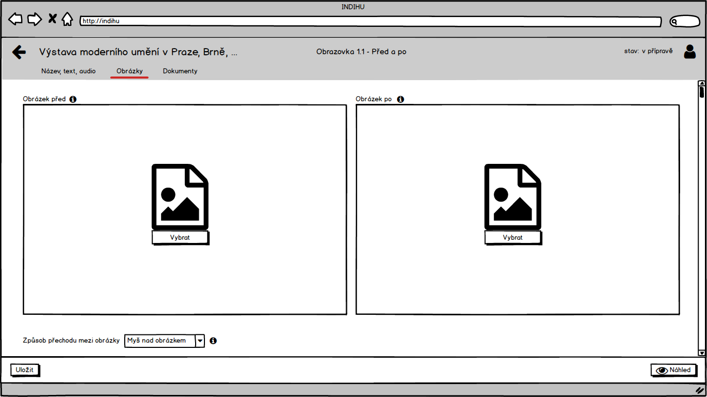
Údaje na hlavní záložce jsou stejné jakou Stránky s obrázkem. Na záložce Obrázky vybírá editor Obrázek před a Obrázek po z knihovny dokumentů. Dále editor volí Způsob přechodu mezi obrázky ze seznamu povolených přechodů.
- Myš nad obrázkem
- Kliknutí na obrázek
- Horizontální táhlo
- Vertikální táhlo
Nápady na využití modulu
Fotografie před a po retuši
Divákovi je umožněno pozorovat, kterak vypadala historická fotografie původně a jak po retuši a kolorizaci.
Původní vs. současný stav
Divákovi je umožněno pozorovat, kterak fotografovaný objekt vyadal před nějakou dobou a jak vypadá například dnes. Lze použít u architektury, exteriéru, interiéru, apod.
Před a po retuši
Divákovi je umožněno porovnat, kterak fotografovaný objekt vypadal předtím a jak poté, co byl zrekonstruován a nebo zrestaurován.
Externí objekt
Modul, jež umožňuje vložit např. výsledek mapy z Google Maps nebo Mapy.cz či video z YouTube.
Práce v editoru
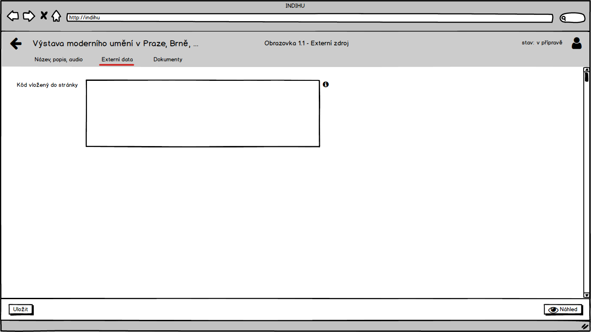
Údaje na hlaví záložce jsou stejné jako u Stránky s obrázkem. Na záložce Externí data vkládá editor do textového pole HTML kód externího objektu, který chcec v rámci stránky zobrazit, např. výsek mapy z Google Maps nebo Mapy.cz či video z YouTube.
Nápady na využití modulu
Google / Seznam mapa
Divák je seznámen s lokací pomocí mapy.
Google street view
Divák je přenesen na konkrétní místo pomocí Google street view.
Video z YouTube
Nahraje video z exterích stránek.
Najdi na obrázku
Minihra
Obsahuje obrázek a definuje bod obrázku, který má divák uhodnout kliknutím na obrázek.
Příprava dat
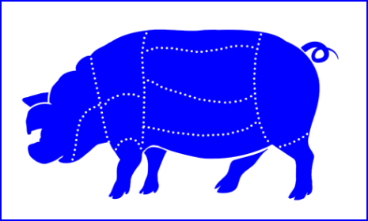
Pro přípravu této minihry je potřeba vytvořit dva obrázky a to obrázek Základní a obrázek Výsedku, který se zobrazí poté, co uživatel prohlížející výstavu označí na obrázku Zadání od, o kterém se domnívá, že je odpovědí na zadání hry.
Obrázky připravujte v rozlišení minimálně full HD (1920×1080) s rozlišením 72 dpi a ve formátu .png nebo .jpg.
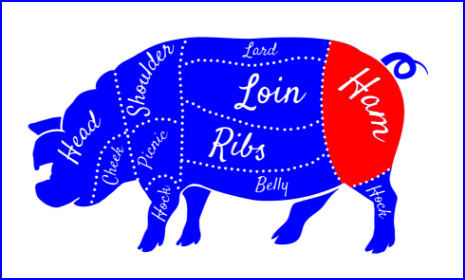
TIP: Obrázky ve formátu .png a .jpg je možné zmenšit až o 80% velikosti na adrese https://tinypng.com
Práce v editoru
Na záložce Obrázky editor vybírá z knihovny dokumentů obrázek Zadání a obrázek Výsledek, který se zobrazí poté, co uživatel prohlížející výstavu označí na obrázku Zadání bod, o kterém se domnívá, že je odpovědí na zadání minihry.
Zaškrtávací pole
Zobrazit uživatelům tip určuje, zda se má na obrázku Výsledek zobrazit i uživatelova volba bodu.
Nápady na využití modulu
Najděte konkrétní osobu
Divák tipuje, ve které části obrazu se nachází konkrétní osoba
Ve které části se nachází
Divák tipuje, ve které části obrazu se nachází objekt, o němž je řeč. Např.: Ve které části hradu byla hladomorna?
Urči konkrétní místo
Divák určuje, kde konkrétně se na mapě nachází zmiňovaný objekt. Např.: Ze které části vepře se dělá šunka?
Dookresli
Minihra
Obsahuje obrázek a umožňuje divákovi kliknutím a tažením myši do tohoto obrázku kreslit. Poté co divák svou kresbu dokončí, zobrazí se správné řešení.
Příprava dat
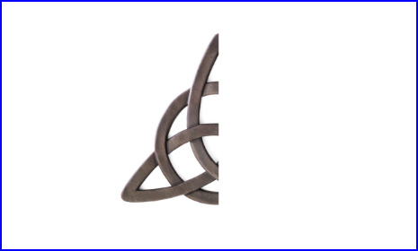
Pro tuto minihru je potřeba připravit obrázek Zadání a obrázek Výsledek, který se zobrazí poté, co uživatel prohlížející výstavu ukončí kreslení do obrázku Zadání.
Obrázky připravujte v rozlišení minimálně full HD (1920×1080) s rozlišením 72 dpi a ve formátu .png nebo .jpg.
TIP: Obrázky ve formátu .png a .jpg je možné zmenšit až o 80% velikosti na adrese https://tinypng.com
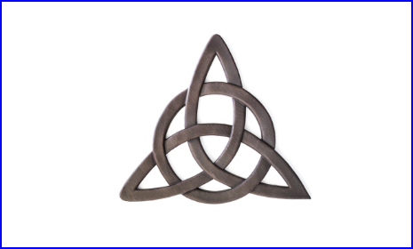
Práce v editoru
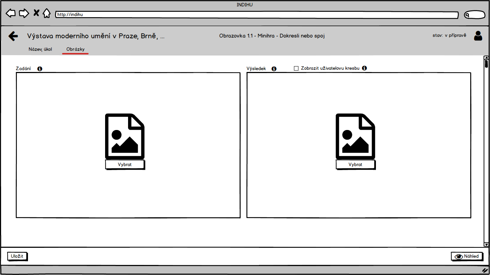
V záložce Obrázky editor vybírá z knihovny dokumentů obrázek Zadání a obrázek Výsledek, který se zobrazí poté, co uživatel prohlížející výstavu ukončí kreslení do obrázku Zadání. Zaškrtávací pole Zobrzit uživatelovu kresbu určuje, zda se má na obrázku Výsleedek zobrazit uživatelovat kresba.
Stírací los
Minihra
Osahuje 2 obrázky, obrázek před a obrázek po, které se na obrazovce překrývají, a umožňuje divákovi kliknutím a tažením myši "stírat" vrchní obrázek a odhalit tím spodní obrázek.
Příprava dat
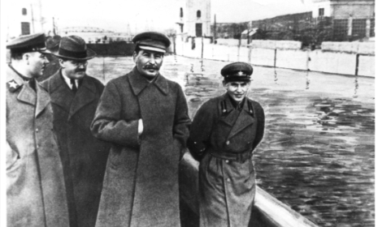
Pro přípravu této minihry je potřeba vytvořit Vrchní obrázek a Spodní obrázek, který se zobrazí pod Vrchním obrázkem na základě masky, kterou vytvoří uživatel prohlížející výstavu tím, že klikne nevým tlačítkem myši a prochází kursorem po Vrchním obrázku.
Obrázky připravujte v rozlišení minimálně full HD (1920×1080) s rozlišením 72 dpi a ve formátu .png nebo .jpg.
TIP: Obrázky ve formátu .png a .jpg je možné zmenšit až o 80% velikosti na adrese https://tinypng.com
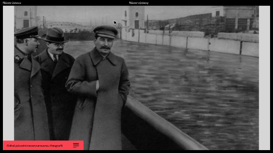
Práce v editoru
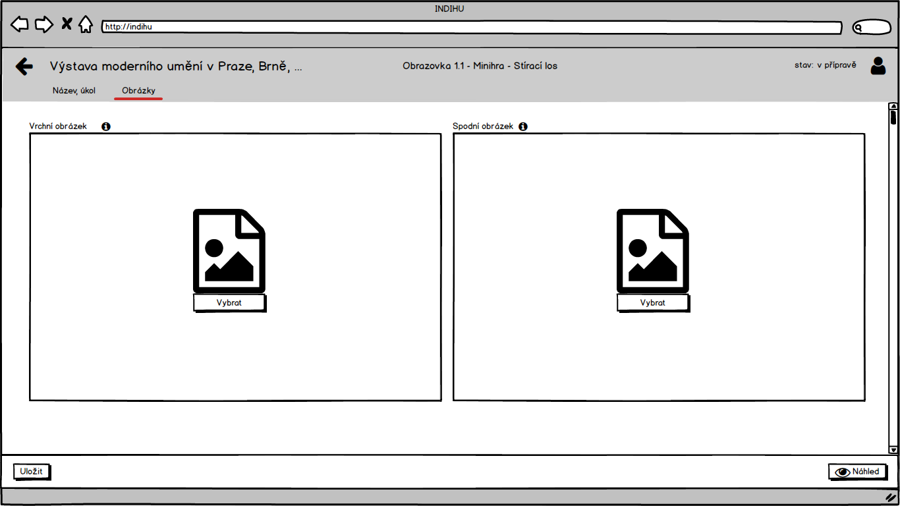
Na záložce Obrázky editor vybírá z knihovny dokumentů Vrchní obrázek a Spodní obrázek, který se zobrazí pod Vrchním obrázkem na základě masky, kterou vytvoří uživatel prohlížející výstavu tím, že klikne levým tlačítkem myši a prochází kurorem po Vrchním obrázku.
Nápady na využití modulu
Odhal skrytý detail
Divák ma za úkol například odhalit, ve které části fotografie se nacházela osoba, jež byla díky nepohodlnosti z fotografie vyretušována.
Původní stav vs. současný stav
Divákovi je umožněno setřít horní vrstvu a dozvědět se tak, kterak forografovaný objekt vypadal před nějakou dobou. Lze použít u architektury, exteriéru, interiéru apod.
Před a po rekonstrukci
Divákovi je umožněno setřít horní vrstvu a dozvědět se tak, jak forografovaný objekt vypadal předtím, co byl zrekonstruován nebo zrestaurován.
Uhodni velikost
Minihra
Obsahuje obrzek výchozího objektu, a umožňuje divákovi tetno referenční oekt zmenšovat a zvětšovat - uživatel se snaží uhodnout správnou velikost referenčního objektu, vůči výchozímu objektu
Příprava dat
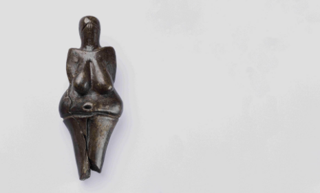
Pro tuto minihru je potřeba připravit dva orázky. LEvý, jehož velikost se nemění a Pravý, který bude uživateli sloužit jako referenční pro udání měřítka.
Obrázky připravujte v rozlišení minimálně full HD (1920×1080) s rozlišením 72 dpi a ve formátu .png nebo .jpg.
TIP: Obrázky ve formátu .png a .jpg je možné zmenšit až o 80% velikosti na adrese https://tinypng.com
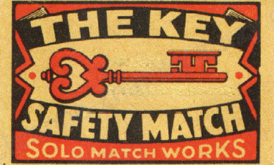
Práce v editoru
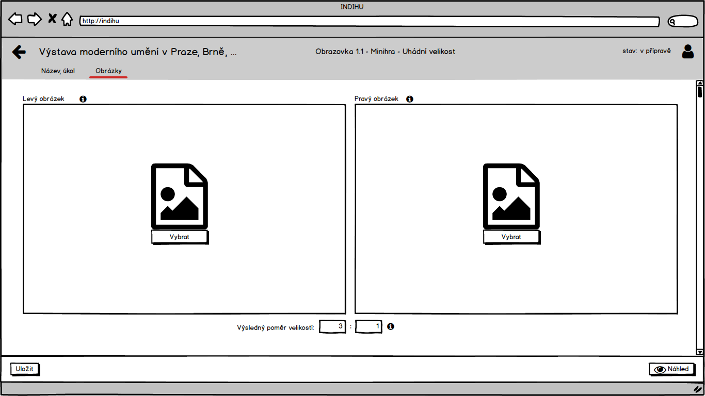
Na záložce Obrázky editor vybírá z knihovny dokuméntů Levý obrázek a Pravý obrázek. Levý obrázek má pevnou velikost, Pravý obrázek může uživatel při prohlížení výstavy myší zmenšovat a zvětšovat, přičemž se snaží uhodnout správný poměr obrázků v realitě. Editor také zadává správný poměr obou obrázků. Po odeslání uživatelovy volby se obrázky zobrazí v tomto správném poměru.
Posuň na správné místo
Minihra
Obsahuje podkladový obrázek a obrázek objektu, a umožňuje divákovi objekt přesouvat metodou drag and drop - divák se snaží přesunout objekt na správné místo.
Příprava dat
Pro přípravu této minihry je potřeba vytvořit obrázek Zadání a obrázek Výsledku, který se zorazí poté, co uživatel prohlížející výstavu posune metodou drag and drop Objekt po statickém Podkladovém obrázku na místo, o němži se dopmnívá, že je správným řešením hry.
Obrázky připravujte v rozlišení minimálně full HD (1920×1080) s rozlišením 72 dpi a ve formátu .png nebo .jpg.
TIP: Obrázky ve formátu .png a .jpg je možné zmenšit až o 80% velikosti na adrese https://tinypng.com
Práce v editoru
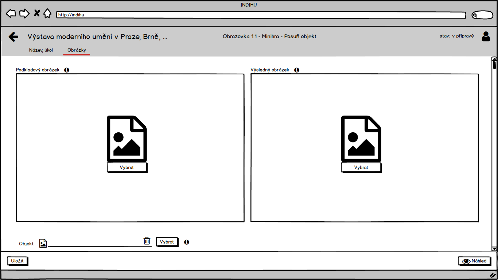
Na záložce Obrázky editor vybírá z knihovny dokumentů Podkladový obrázek a Objekt. Uživatel prohlížející výstavu posouvá metodou drag and drop Óbjekt po statickém Podkladovém obrázku a snaž se uhodnout jeho správnou polohu. Následně je zobrazen Výsledný obrázek, zobrazující správnou polohu Objektu.
Nápady na využití modulu
Posuň na správné místo
Divák má za úkol najít a posunout na správné místo poslední chybějící díl. Např.: Dokončít skládačku, doplnit chybějčí část apod.
Vyber a aplikuj
Divák má za úkol například najít správný nástroj na to, aby docílil požadovaného výsledku.
Např.: Jaká byla druhá charakteristická barva těchto athénských váz?
Vyber z možností
Minihra
Obsahuje otázky a 3 odpovědi, kdy každá odpověď je tvořená textem a obrázkem, a umožňuje divákovi zvolit kliknutím jednu ze tří odpovědí.
Příprava dat
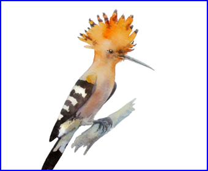
Obrázky připravujte v rozlišení minimálně full HD (1920×1080) s rozlišením 72 dpi a ve formátu .png nebo .jpg.
TIP: Obrázky ve formátu .png a .jpg je možné zmenšit až o 80% velikosti na adrese https://tinypng.com
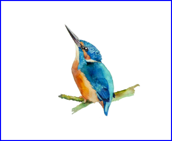
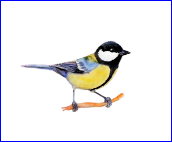
Práce v editoru
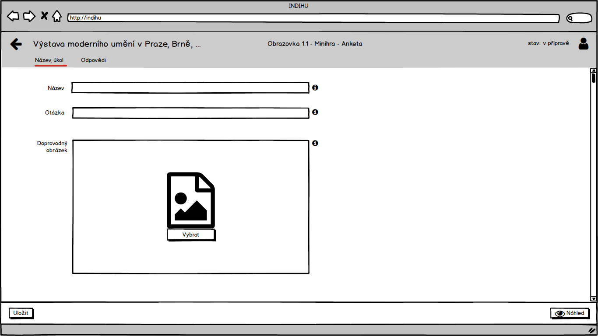
- Na hlavní záložce editor vyplňuje vyplňuje název stránky a vybírá doprovodný ilustrační obrázek z knihovný dokumentů.
- Na záložce Odpovědi editor zadává text odpovědí na otázku A-C a ke každé odpovědi vybírá ilustrační obrázek z knihovny dokumentů. Dále zde editor indikuje, která z odpovědí je správná.
Nápady na využití modulu
Tipování
Divák tipuje správnou odpověď na otázku. Například: Tipněte si, který ze zobrazených ptáků je dudek?
Hlasování
Divák hlasuje pro jednu z variant.